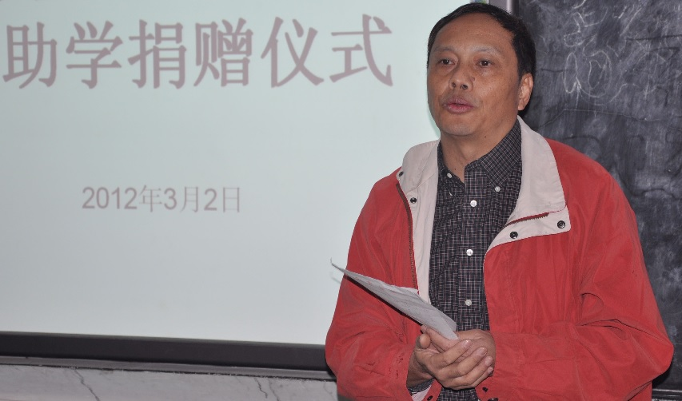
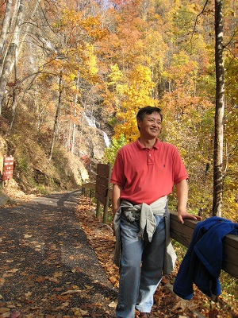
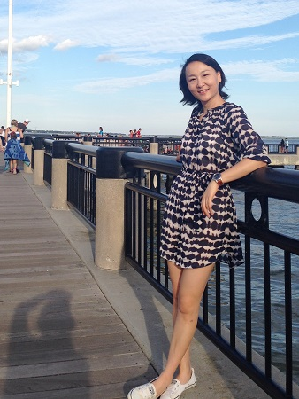
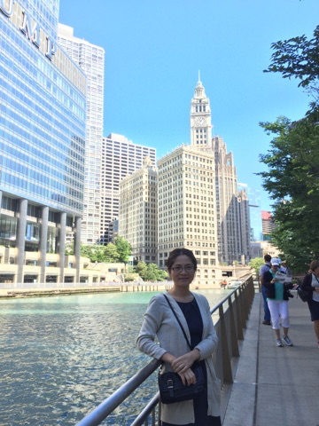
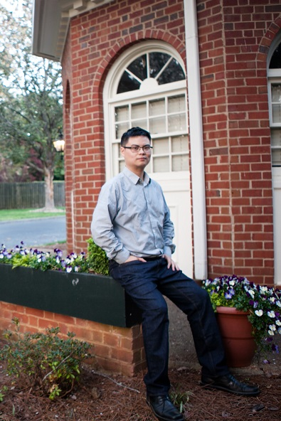
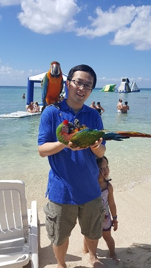

朱江宁
项目审核部负责人, 云南保山人，IT行业。从2011年开始参加基金会的捐助活动，多次赴大陆贫困地区探访并代表基金会为优秀贫困学生发放捐助。
白又佳
祖籍上海，初中和父母一起移民来美国，现在从事注册会计师工作。一直对慈善事业感兴趣，希望能尽自己的努力能让更多的孩子受到好的教育。

李东风
生长于山东，曾就读山东大学工学院，后获北卡州立大学经济学博士。现从事银行信贷风险管理及反洗钱方面工作。我非常赞同基金会的理念及实施办法，希望能尽微薄之力。

邓丽萍
河南开封人。统计学和MBA金融方向双硕士， 现在从事信贷风险管理统计模型工作。 非常赞同基金会的理念和运作方式，深知知识对于孩子的重要性， 愿尽自己的绵薄之力帮助边远地区贫困孩子。

魏红
来自国防三线，自小就有机会目睹周边山区贫困家庭的惨境，之后也见证了教育是如何改变贫寒子弟的命运.真切感受到教育是目前中国相对公平的摆脱贫困改变命运的途径。让我们伸出手，帮助更多的孩子来完成这个转变吧！

黄伟平
湖南长沙人。计算机硕士，本科毕业于中南大学，从事计算机行业工作8年。非常认同基金会的理念，希望通过参于基金会的项目为需要帮助的孩子们贡献自己的一份力量。

刘恩忠
来自湖南， 现在从事财务方面工作。 一直信奉，多做点滴小事，多做力所能及之事，当积少成多时，我们， 作为一个整体，将会看到超出想象的正面影响， 非常荣幸能够为孩子们做些小事。
Top